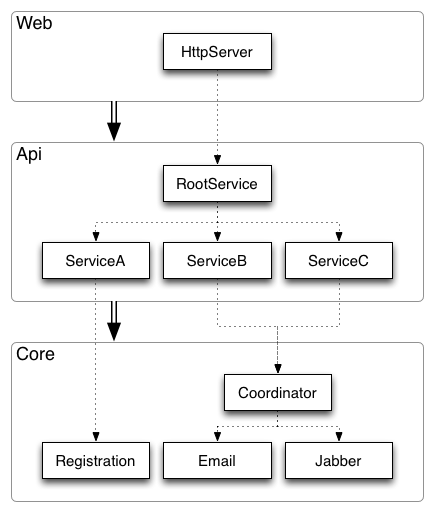
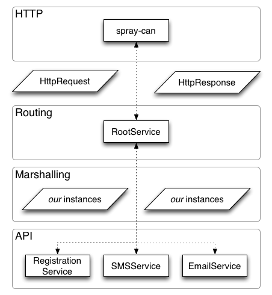

This application shows how to build Akka application with Spray API. In this tutorial, I
are going to use Spray's spray-can, spray-httpx,
spray-json artefacts with the Akka artefacts to build an application
that receives HTTP requests with JSON payloads, unmarshals the JSON into instances of our
own classes (case classes, to be exact). It then sends these instances to the
appropriate Actors for processing. When the actors reply, it marshals the
responses into JSON, and uses that to construct the HTTP responses.
I shall also explore the Cake pattern, which enable us to separate out parts of the system so that I can "assemble" the parts of the cake into the components that I ultimately run or test.

In this template & tutorial, you will learn how to construct Akka-based applications; how to test them (using TestKit and Specs2; and how to provide RESTful HTTP API using Spray.
I begin by constructing the core of our system. It contains the top-level
MessengerActor and RegistrationActor. The
MessengerActor contains two child actors, the EmailActor and
the SMSActor.
The top-level actors live in the CoreActors trait. This trait's
self-type annotation defines that instances that mix in this trait
must also mix in some subtype of the Core trait.
This is a rather long description of the first two lines of the CoreActors trait.
trait CoreActors {
this: Core =>
}
Core
trait in the CoreActors trait. Our Core trait defines only one
member, namely implicit def system: ActorSystem; and I use the system
to create the top-level actors.
The CoreActor in its entirety is therefore
trait CoreActors {
this: Core =>
val registration = system.actorOf(Props[RegistrationActor])
val messenger = system.actorOf(Props[MessengerActor])
}
I also provide the implementation of the Core trait that actually constructs
the ActorSystem. I call this trait BootedCore. It instantiates the
ActorSystem and registers the JVM termination hook to shutdown the ActorSystem
on JVM exit.
trait BootedCore extends Core {
implicit val system = ActorSystem("akka-spray")
sys.addShutdownHook(system.shutdown())
}
BootedCore is a straight-forward implementation of the
Core trait.
If I now wanted, I could write a simple application that starts our actors by mixing in the traits.
object Cli extends App with BootedCore with CoreActors
object Cli extends App with CoreActors with BootedCore!BootedCore's implementation of the system
method is implicit val system = ActorSystem("akka-spray") and if
I write object Cli extends App with CoreActors with BootedCore, the
code in CoreActors runs before the code in BootedCore--meaning
that when the code in CoreActors runs, the value of the system
val is still null.
Having to worry about the order in which I mix in the traits is wholly unsatisfactory.
I need to find a way in which a val can be evaluated immediately when
its value is required, but once it is evaluated, it behaves like an ordinary val.
Rephrasing, I want a member whose value will be computed and remembered on first access, and
subsequent accesses will return the remembered value.
To do this in Scala, I mark the val as lazy. Thus, our
BootedCore's system becomes
trait BootedCore extends Core {
implicit lazy val system = ActorSystem("akka-spray")
sys.addShutdownHook(system.shutdown())
}
lazy keyword--now I are free to mix in the required traits
in any order.
Let's now explore why I did so much code gymnastics. I could have just as easily
defined the CoreActors trait to contain all the code in Core and
BootedCore.
The motivation was testing. When I are using Akka's TestKit, we
construct a test-only ActorSystem. This testing ActorSystem
allows us to test the actors as if the messages sent and received were method
calls. In other words, the ActorSystem in our tests uses the
CallingThreadDispatcher, making the message delivery synchronous.
As it happens, the TestKit contains a member called system: ActorSystem;
and it matches the Core trait. Therefore, it is easy to make our specification
implement the Core trait. This in turn means that our test satisfies the self-type
annotation of the CoreActors trait.
And thus, I can easily write a test for our entire application's structure.
class RegistrationActorSpec extends TestKit(ActorSystem()) with SpecificationLike with CoreActors with Core {
...
}
TestKit class, which gives us access to all the underlying Akka's test
mechanisms; I also mix in Specs2's SpecificationLike, which gives
us the convenient DSL for writing our test scenarios and assertions. Finally, because I am writing code
to test my actors, I mix in the CoreActors and Core traits.
I do not need to do any more work, because the member system: ActorSystem fully implements
the Core trait. However, I need to implement the Core trait to satisfy the
self-type declaration of the CoreActors.
I could have defined Core to be structural type, in which case,
I would not have to worry about implementing Core here. If you want to try it out,
remove the trait Core { ... } and replace it with
package object core {
type Core = { def system: ActorSystem }
}
Core type is a structural type, which says that
Core is anything which contains the system: ActorSystem member.
The implementation of the actors is not particularly interesting. I will explore the common patterns of naming and structuring that I believe are useful; the implementation of the actors I leave to the readers.
I begin with the RegistrationActor. Its purpose is to register the users in our
system. The actor's companion object holds all the messages that the
actor deals with. In code, the structure is
object RegistrationActor {
case class Register(user: User)
case object Registered
case object NotRegistered
}
class RegistrationActor extends Actor {
import RegistrationActor._
def receive: Receive = ???
}
Onwards to the actor's implementation, then. As I said, it will be rather trivial,
mainly demonstrating approaches & patterns. When it receives the Register
message, it performs the required processing and then replies to the sender with
the outcome of the registration process.
class RegistrationActor extends Actor{
import RegistrationActor._
def receive: Receive = {
case Register(user) if user.email.isEmpty => sender ! Left(NotRegistered)
case Register(user) => sender ! Right(Registered)
}
}
RegistrationActor
As simple as the RegistrationActor is, we can (and should) still test it.
We can either test the actor in isolation, writing a unit test, or we can test our
entire application, but focusing on the RegistrationActor--an integration test.
I will show the integration test approach here.
To allow us to examine what happens in our actors, we need to use special--crippled--
ActorSystem that processes the messages synchronously. To the code, then. We
extend the TestKit class and mix in the required traits to construct the test.
class RegistrationActorSpec extends TestKit(ActorSystem()) with SpecificationLike with CoreActors with Core {
sequential
private def mkUser(email: String): User = User(UUID.randomUUID(), "A", "B", email)
"Registration should" >> {
"reject invalid email" in {
registration ! Register(mkUser(""))
expectMsg(Left(NotRegistered))
success
}
"accept valid user to be registered" in {
registration ! Register(mkUser("jan@eigengo.com"))
expectMsg(Right(Registered))
success
}
}
}
CoreActors,
satisfying the Core self-type annotation by having the RegistrationActorSpec
implement the Core trait. (Remember, I can do that just by writing with Core,
because TestKit already contains the member system: ActorSystem, which is
all that is needed to fully implement Core.)
Onwards. If you run the test, it will fail. It will complain about failing timeouts, namely
assertion failed: timeout (3 seconds) during expectMsgClass waiting for class core.RegistrationActor$NotRegistered$
RegistrationActor's receive,
you will see that it is indeed executing; replying to the sender with the appropriate
message.sender itself is somehow broken. Indeed. Going back to our
test, I write registration ! Register(mkUser("")). If you explore the !
function, you will see that it is a curried function, whose first parameter list is the
message to be sent, and its second parameter list is the ActorRef which represents
the sender. It is marked as implicit, but it also contains a default value.
So, if no ActorRef instance is available implicitly, the default value will be used
instead. Unfortunately for me here, the default value is Actor.noSender.
To fix the problem, all I need to do is have an implicit ActorRef value. However,
this ActorRef should also somehow interact with the rest of the code in TestKit.
Furtunately for the lazy, TestKit provides the ImplicitSender trait, which makes
the testActor implicitly available; and the testActor interacts with
all the expect... functions in TestKit.
class RegistrationActorSpec extends TestKit(ActorSystem()) with SpecificationLike with CoreActors with Core with ImplicitSender {
...
}
ImplicitSender and all is good!
We are going to use most of the Spray components, namely
spray-io for the low-level, asynchronous I/O,spray-http for the HTTP protocol implementation on top of spray-io,spray-routing, which provides convenient DSL for mapping HTTP requests to functions,spray-httpx for the unmarshalling and marshalling of the HTTP requests and responses,spray-json for JSON marshallers and unmarshallers
I continue to strictly separate the layers of (even if so trivial) application; therefore,
I will separate the REST API from the code that starts the HTTP server hosting the API.
In keeping with the rest of the system, I will split the layers into traits, giving me
the Api and Web traits. As you can guess, the Api trait
contains just the REST API, and the Web trait exposes the APIs in a real
HTTP server.
To make the Api trait work with the rest of the system, I will use the self-type
annotation and require that the Api trait is mixed in with CoreActors
and Core. The Web trait will need to be mixed in with Api.
trait Api {
this: CoreActors with Core =>
...
}
trait Web {
this: Api with CoreActors with Core =>
...
}
App that combines all the components
and starts a real HTTP server; server, which hosts the API, which in turn uses the core
actors to do the heavy processing. In code, the entire application is just one line:
object Rest extends App with BootedCore with CoreActors with Api with Web
Let's explore the Api trait, which defines the REST endpoints. In keeping with the
structure from the diagram, I have kept each endpoint in its own class. The Api trait
constructs the classes for these endpoints and then concatenates the routes they each expose.
The RoutedHttpService then routes the incoming HTTP requests accordingly.
trait Api extends RouteConcatenation {
this: CoreActors with Core =>
private implicit val _ = system.dispatcher
val routes =
new RegistrationService(registration).route ~
new MessengerService(messenger).route
val rootService = system.actorOf(Props(new RoutedHttpService(routes)))
}
RegistrationService and the MessengerService, giving
each reference to the approprite ActorRef from the CoreActors. (I can do
this, because the Api trait declares the CoreActors as its self-type.)
I will show the code and structure of the RegistrationService, which is ever so
slightly more complex than the code in MessengerService. The motivation for the
RegistrationService is to have REST API that receives JSON payloads in that can
be mapped to instances of the Register case class.
{ "user": {
"id": "122fa630-92fd-11e2-9e96-0800200c9a66",
"firstName":"Jan",
"lastName":"Machacek",
"email":"jan@eigengo.com" } }
Either[NotRegistered, Registered]);
the value on the left projection should result in HTTP status bad request; the
value on the right projection should be HTTP OK. In our application, the value
Left(NotRegistered) should be represented as HTTP status 400
with JSON payload
{ "value": "NotRegistered" }
Right(Registered) should be represented as HTTP status 200
with JSON payload
{ "value": "Registered" }
Before we begin to worry about the marshalling and unmarshalling, let's deal with the actual
HTTP requests. Spray-can deals with the low-level I/O of asynchronous HTTP (and SPDY!) server;
it then turns the HTTP requests and responses into HttpRequest messages;
the response sent to the sender is the HttpResponse, containing the response entity,
headers, etc.
Spray-http deals with convenient routing so that we don't have to implement actors that
receive HttpRequests and reply to the sender with the raw HttpResponses;
spray-httpx adds the marshalling and unmarshalling support.

Let's start working on the RegistrationService. I will begin by using the routes.
class RegistrationService(registration: ActorRef)(implicit executionContext: ExecutionContext)
extends Directives {
val route =
path("register") {
post {
complete {
"OK"
}
}
}
}
register, on HTTP method POST, we complete the request with body "OK.
Unfortunately, the string "OK" doesn't quite meet our requirement. To do so, we need to interpret
the request as instance of Register and turn our Either[NotRegistered.type, Registered.type]
into the response.
All of this requires some marshalling jiggery pokery. Firstly, we need to be able to turn
the HTTP requests into instances of our types and then we need to be able to do the reverse.
Spray provides pluggable marshalling mechanism to do that. The instances of the typeclasses
Marshaller[A] and Unmarshaller[A] are responsible for performing the
request entity -> our instance and our instance -> response entity
transformations.
I will not get into a complex discussion of typeclasses; I will just say that typeclass defines
behaviour for a certain type and a typeclass instance is the implementation of such behaviour.
Spray includes the spray-json library, which, together with the SprayJsonSupport
trait allows me to wire in spray-json marshallers and unmarshallers and use them in my
Spray code.
Without further delay, let me show you how it's done in code and then explore the details.
class RegistrationService(registration: ActorRef)(implicit executionContext: ExecutionContext)
extends Directives with DefaultJsonFormats {
import akka.pattern.ask
import scala.concurrent.duration._
implicit val timeout = Timeout(2.seconds)
implicit val userFormat = jsonFormat4(User)
implicit val registerFormat = jsonFormat1(Register)
implicit val registeredFormat = jsonObjectFormat[Registered.type]
implicit val notRegisteredFormat = jsonObjectFormat[NotRegistered.type]
implicit object EitherErrorSelector extends ErrorSelector[NotRegistered.type] {
def apply(v: NotRegistered.type): StatusCode = StatusCodes.BadRequest
}
val route =
path("register") {
post {
handleWith { ru: Register =>
(registration ? ru).mapTo[Either[NotRegistered.type, Registered.type]]
}
}
}
}
route definition, the only difference is that I changed
complete to handleWith; and then wired in the call to our
RegistrationActor.Register and then
handleWith a function that returns a Future[Either[...]], which we
turn into a response.
Intuition did not fail us. All we have to do is to implement the behaviour of turning the requests into our types and our types into responses. So, instances of typeclasses! Those are the mysterious lines
implicit val userFormat = jsonFormat4(User)
implicit val registerFormat = jsonFormat1(Register)
implicit val registeredFormat = jsonObjectFormat[Registered.type]
implicit val notRegisteredFormat = jsonObjectFormat[NotRegistered.type]
RootJsonFormat[A], where A is User,
Register, and so on. RootJsonFormat[A] contains functions that read JSON
and write JSON; SprayJsonSupport then contains further typeclass instances that implement
Marshaller[A] given JsonWriter[A], and Unmarshaller[A] given
JsonReader[A]. Moving on, we can create other interesting marshalling typeclasses.
For example, if we know how to marshal some type A, we also know how to marshal
Seq[A], Future[A]; if we know how to marshal some A and
B, we can marshal Either[A, B], and so on. We are now ready to write
a marshaller that marshals Either[A, B] and, for the left values, it also indicates
the corret HTTP status code. Its signature is rather scary
type ErrorSelector[A] = A => StatusCode
implicit def errorSelectingEitherMarshaller[A, B](implicit ma: Marshaller[A], mb: Marshaller[B], esa: ErrorSelector[A]): Marshaller[Either[A, B]] =
Marshaller[Either[A, B]] { (value, ctx) =>
value match {
case Left(a) =>
val mc = new CollectingMarshallingContext()
ma(a, mc)
ctx.handleError(ErrorResponseException(esa(a), mc.entity))
case Right(b) =>
mb(b, ctx)
}
}
errorSelectingEitherMarshaller[A, B] that returns
Marshalle[Either[A, B]]. To be able to do that, it must know how to marshal A
and B; and if I want to be able to indicate the status code, I must also be able to turn
As into StatusCode. That's what the three implicit parameters do: I am asking
the compiler to implicitly find an instance of Marshaller[A], Marshaller[B] and
ErrorSelector[A]; in other words, instances of the Marshaller and ErrorSelector
typeclasses for instances A and B.
To use, I must give the typeclass instance for NotRegistered.type; I do so by defining a
singleton:
implicit object EitherErrorSelector extends ErrorSelector[NotRegistered.type] {
def apply(v: NotRegistered.type): StatusCode = StatusCodes.BadRequest
}
NotRegistered value is StatusCodes.BadRequest.
To complete the picture, I must implement the Web trait, which takes the
rootService in the Api trait and hosts it in the spray-can
HTTP server. The good news is that the code gets simpler:
trait Web {
this: Api with CoreActors with Core =>
IO(Http)(system) ! Http.Bind(rootService, "0.0.0.0", port = 8080)
}
Http extension, pass it to Akka's IO machinery; and finally
send it the Http.Bind message to bind the rootService to all interfaces,
on port 8080.
I am excited to present the final application that combines all our components in an HTTP server. It is
object Rest extends App with BootedCore with CoreActors with Api with Web
App, mixed in all required
traits and we're good to go.